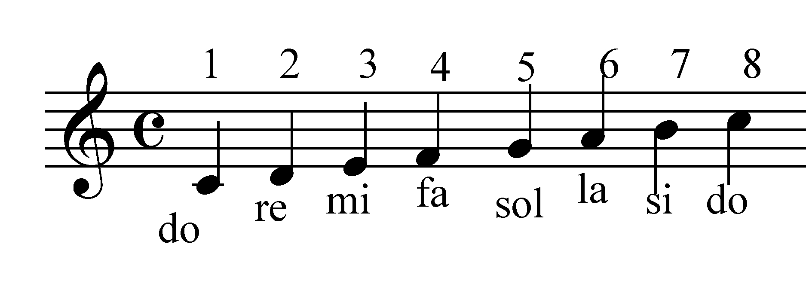

Parámetros del Sonido
En esta sección, exploraremos los parámetros fundamentales del sonido, comprendiendo su definición y las características matemáticas que los describen.
Definición de Sonido
El sonido es una vibración que se propaga a través de un medio, ya sea gas, líquido o sólido. Esta vibración produce ondas que nuestro oído percibe como sonido. La velocidad del sonido varía según el medio a través del cual se propaga.
La percepción del sonido involucra la frecuencia, amplitud, duración e intensidad de estas vibraciones, dando lugar a la experiencia auditiva que conocemos como música.
| Parámetro | Definición | Aspectos Matemáticos |
|---|---|---|
| Altura | La altura se relaciona con la frecuencia del sonido. Los sonidos graves tienen bajas frecuencias, mientras que los agudos tienen frecuencias altas. | Altura (Hz) = 1 / Periodo (segundos) Longitud de onda (m) = Velocidad del sonido (m/s) / Frecuencia (Hz) |
| Duración | La duración se refiere al tiempo que dura un sonido. En la música, está vinculada al ritmo y a cómo se organizan las notas en el tiempo. | Relación con la notación musical y la organización temporal de las notas y silencios. |
| Intensidad | La intensidad se relaciona con la amplitud de las ondas sonoras. Es responsable de la percepción de volumen, siendo sonidos más intensos más fuertes. | Intensidad (W/m²) = Energía (Joules) / Área (m²) |
| Timbre | El timbre es la calidad tonal única que permite distinguir diferentes instrumentos o voces. Se relaciona con la forma del espectro de frecuencias. | Descomposición espectral utilizando transformadas de Fourier y análisis armónico. |